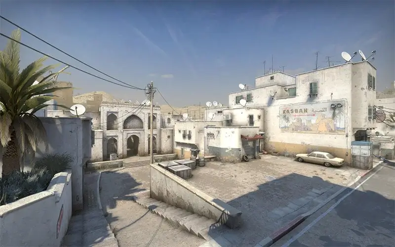
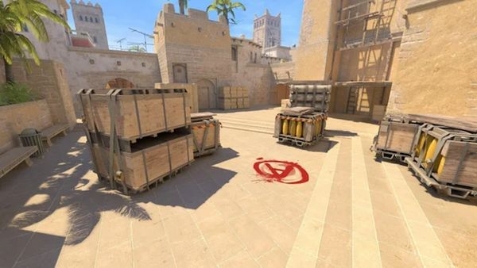
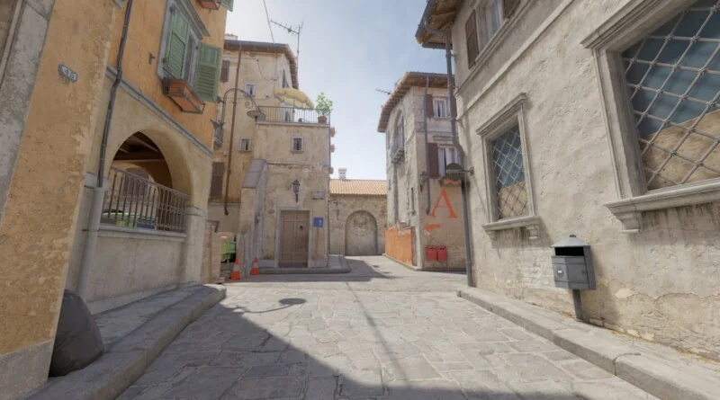
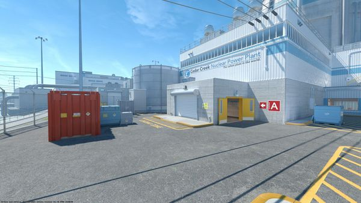
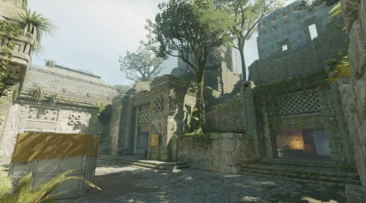
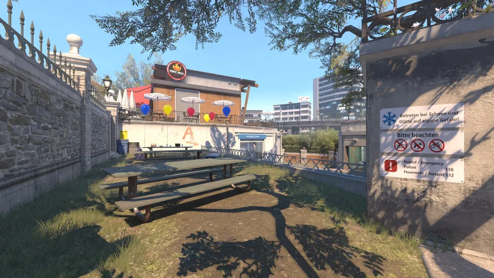

Dust2
O mapa mais famoso do jogo, ambientado em uma cidade do deserto.
O Counter-Strike é um jogo de tiro em primeira pessoa em que duas equipes se enfrentam: os Terroristas e os Contra-Terroristas. Ele começou em 1999 como um mod do jogo Half-Life e depois foi comprado pela Valve. Hoje o jogo mais atual é o Counter-Strike 2.

O mapa mais famoso do jogo, ambientado em uma cidade do deserto.

Mapa equilibrado, com várias rotas e muito usado em campeonatos.

Fica em uma vila europeia, com ruas estreitas e muitas granadas.

Passa-se em uma usina nuclear, com os bombsites um em cima do outro.

Mapa com visual de ruínas antigas no meio da selva.

Mapa de cidade com canais, pontes e um parque.